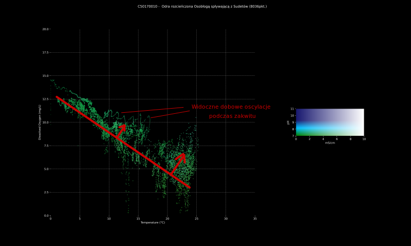
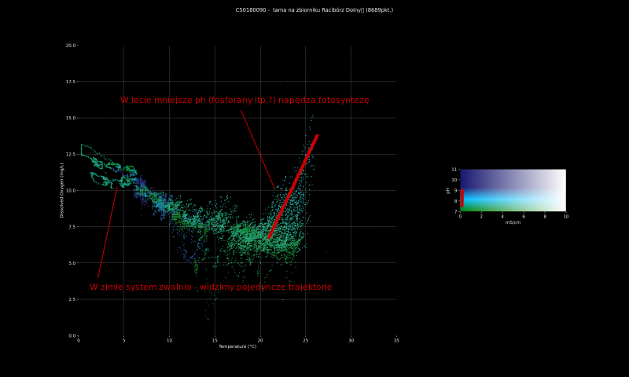
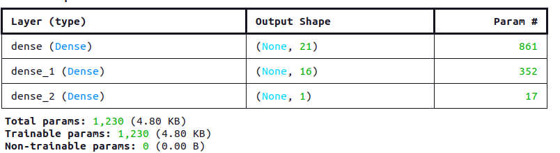
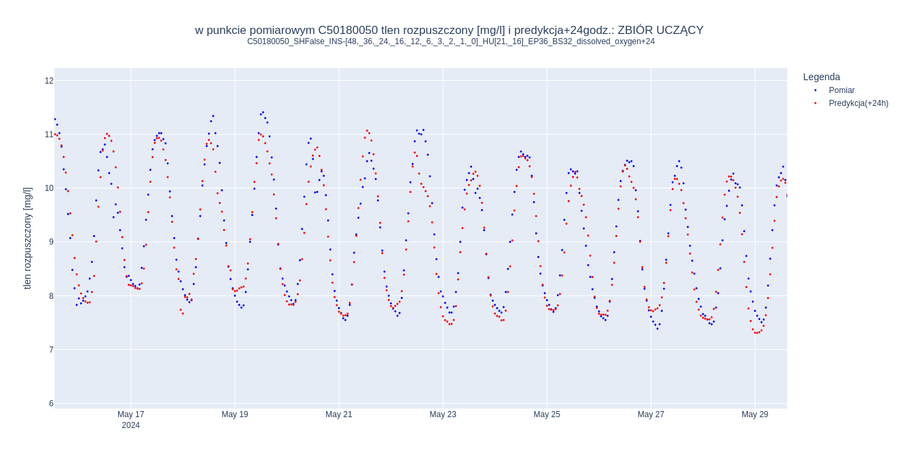
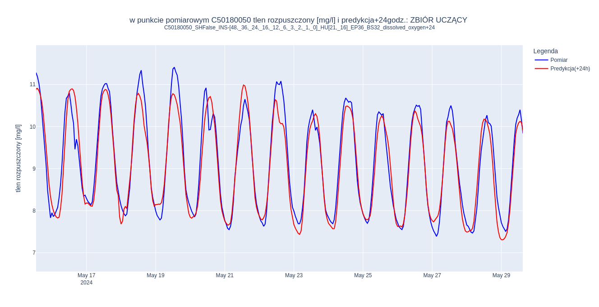
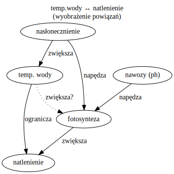

Analiza i przetwarzanie wstępne danych
Zakres analizy
Do wstepnej analizy użyto danych z hydro.imgw.pl dla kilkunastu stacji na górnej Odrze:
| C49180020 | Łaziska - Olza zaraz za granica z Czechami |
| C49180010 | po połączeniu Olzy z Odrą - Chałupki nad raciborskim zbiornikiem |
| C50180090 | Tama na zbiorniku Racibórz Dolny |
| C50180070 | Turze - rzeczka Ruda (przepływa przez Rybnik, Żory), zaraz przed wpadnięciem do Odry |
| C50180010 | rzeczka Bierawka - zaraz przed wpadnięciem do Odry. Stacja bezposrednio pod zakładami azotowymi Kedzierzyn S.A. |
| C50180020 | Gliwice Marina - w środku miasta, na Kanale Gliwickim |
| C50180040 | Gliwice Łabędy - w środku miasta, na Kłodnicy |
| C50180030 | Ujazd Most - kanał Gliwicki niżej, chyba trochę już rozcieńczony |
| C50180050 | Lenartowice - Kłodnica niżej |
| C50170060 | Koźle - Odra po wpadnieciu Kłodnicy |
| C50180100 | Port Koźle - Kanał Gliwicki przed wpuszczeniem do Odry (w której już jest Kłodnica) |
| C50180080 | Stocznia Januszkowice - Odra z Kłodnicą i świeżo wpuszczonym Kanałem Gliwickim |
| C50170010 | Odra rozcieńczona Osobłogą spływającą z Sudetów |
Rozpiętość czasowa i niedostepność mętności (turbidity)
- Dla ledwie dwóch stacji - Krapkowic (Odra z Osłobogą) i na tamie na zbiorniku Racibórz Dolny dostępne były dane całoroczne - od września 2023. Dla pozostałych stacji dane dostępne są od wiosny 2024.
- Odczyty mętności pojawiają się dopiero w lecie 2024, od różnych dat, zależnie od stacji (były stopniowo montowane czujniki mętności w lecie 2024?)
- Pełne zbiory danych wraz z mętnością (dla uczenia maszynowego nie może być brakujących wartości w wierszach) liczą zaledwie około 2000 punktów - za mało dla ML.
- Gdy nie bierzemy pod uwagę mętności, uzyskujemy tabele dwa razy większe - po 4000 punktów pomiarowych (teoretycznie co godzinę) dla większości stacji (tych "półrocznych") i po około 8000 punktów dla dwóch stacji mających dane z całego ostatniego roku.
W związku z tym przyjęta struktura zbiorów danych (tabel z pomiarami) to:
| nazwa kolumny | jednostka | ||
|---|---|---|---|
| 1. | temp | temperatura wody | ℃ |
| 2. | dissolved_oxygen | tlen rozpuszczony | mg/l |
| 3. | ph | ph | (chemiczne ph) |
| 4. | conductivity | przewodność | μS/cm |
Wizualizacja zbiorów
Przydatny okazuje się wykres wszystkich punktów z jednej stacji (jednocześnie, z całego półrocza/roku):
| temperatura wody | oś X |
| tlen rozpuszczony | oś Y |
| ph | kolor punktu: zielony(7) ↔ niebieski(11) |
| przewodność | kolor punktu: kolor ph ↔ biały |
Widoczne dla laików zależności w tych zbiorach:
- natlenienia od temperatury: h∝-T : z powodu ograniczonej rozpuszczalności tlenu w wodzie. otosynteza "wynosi" na ponad 100% nasycenie roztworu tlenem. 
- Fotosynteza zdaje się "rozpędzać w lecie" przy spadku ph (spływające do wód nawozy?) 
- Zbiory danych są bardzo różne, a mocno zasolony kanał w środowisku antropogenicznym zupełnie nie przypomina zdrowej rzeki
Model uczenia maszynowego - prosty perceptron wielowarstwowy
- Wejścia: dla każdej z 4 cech wartość [48, 36, 24, 16, 12, 6, 3, 2, 1, 0] godzin wcześniej.
- Dwie warstwy ukryte - po 21 i 16 neuronów
- Pojedynczy neuron wyjściowy, którego pobudzenie jest przewidywaną przez sieć wartoscią dla jednej z czterech cech na 24 godziny do przodu 
Jest to najprostszy typ głebokiej sieci neuronowej - chcieliśmy sprawdzić, jak zachowa sie nieskomplikowany model.
Wedle aktaulnego stanu wiedzyw dziedzinie, do predykcji szeregów czasowych najlepiej nadają się rekurencyjne sieci neuronowe z komórkami LSTM lub GRU. Będą one następnym badanym modelem i porównamy ich wydajność w porównaniu z bazowym podejściem w postacji perceptronu wielowarstwowego.
Przykładowe predykcje
Nie powinno się łączyć punktów na wykresie... ale mało widać (zresztą perceptron i tak „uznaje” to zapewne za układ dynamiczny z funkcjami ciagłymi)
 ze dwa wyniki predykcjiWniosek: model uczy się dynamiki temperatury i natlenienia, ma problem z ph i przewodnością.
Dlaczego? (przypuszczenia laików)
- Temperatura wody i nasłonecznienie wydają się być częścią układu podlegającego naturalnej dynamice i którego parametry (prawie) wejściowe mierzyny

- "Rządzić" wydaje się dobowy cykl nasłonecznienia (skorelowany z temp. wody) i "żyzność" wody (skorelowana z ph)
- Z kolei Przewodność (zasolenie), zwłaszcza w środowisku antropogenicznym nie wydaje się być skorelowana z niczym i często wynikać z jednostkowych, ludzkich zachowań (fundamentalnie nieprzewidywalnych)
Zrzuty ścieków na Kanale Gliwickim - jakich prawidłowości sie tu doszukiwać?
Pomysł: Nawozy inne biogeny spływją do wód po deszczach ➛ dodanie danych metoerologicznych o dziennym opadzie może pomóc przy ph. Zasolenie też może po części zależeć od opadów pewien czas wcześniej.
Nasłonecznienie napędza fotosyntezę - temperatura gruntu, mającego mniejszą bezwładnosć cieplną moze poprawić predykcje natlenienia.
Zastanawiamy się nad dodaniem dwóch kolumn do danych wejściowych.| nazwa kolumny | jednostka | ||
|---|---|---|---|
| 1. | temp | temperatura wody | ℃ |
| 2. | dissolved_oxygen | tlen rozpuszczony | mg/l |
| 3. | ph | ph | (chemiczne ph) |
| 4. | conductivity | przewodność | μS/cm |
| 5.? | ground_temp | temperatura gruntu | ℃ |
| 6.? | precipitation | opad godzinowy | mm |
Pytania:
- Jaki charakter ma zależność zasolenia i ph od opadów?
- Czy patrzeć na więcej niż dwa dni do tyłu? (bo wody podziemne)
- Brać opad godzinowy z tego miejsca, czy z całego, szerszego obszaru, czy z miejsca pomiaru, czy w górę rzeki (ile?)
- Czy temp. gruntu z danych meteo będzie lepiej skorelowana z dopływem energii słonecznej do wód niz sama temp. wody?
- Skąd się biorą sole w rzece? (Oprócz ścieków i podłoża geologicznego)
- Co wiemy o dynamice/okresowości zrzutów ścieków do rzek?
- Zaobserwowaliśmy czasem okresowość dobową, ale tylko przez pewien czas.
- Czy występuje zależność od opadów?
- Jakaś inny mierzalna wartość skorelowana ze zrzutami zanieczyszczeń (zwiększająca ich prawdopodobieństwo)?
- Jeśli zrzuty są arbitralnie antropogeniczne, to idealny model AI nauczyłby się "zgadywać" co zrobi operator w zakładzie przemysłowym/kopalni.
Defekty danych
- ...serie są za krótkie (lepsze byłyby wieloletnie dla danej stacji)
- Lecz może to jest w rzeczywistości wada, bo po zainstalowaniu nowej stacji i tak trzeba będzie czekać co najmniej pół roku na predykcje (więc może niepotrzebne nam dłuższe)
- Rozkalibrowanie - gwałtowne skoki i zmiany poziomów (które czasem trudno odróżnić od rzeczywistych, gwałtownych zdarzeń)
- Model się takich defektów pilnie uczy i odtwarza...
- Nie powinniśmy próbować usuwać ich z danych uczących, bo nie zagwarantujemy, że któregoś dnia komuś znowu nie przesunie sie sonda.
- Zaokrąglanie do dziesiątej/setnej części (+ problemy z łącznością?)
-
"Schodki" wykresach
- "Kratka" w chmurze punktów
- Średnia krocząca?
-
"Schodki" wykresach
Do zajmujacych się istniejącymi stacjami pomiarowymi:
- Pytanie o skokowe zmiany (ph) - rozkalibrowanie czy inna przyczyna?
- Nie zaokrąglać, nie stosować średnich kroczących - utrata potencjalnie cennej informacji, te operacje przeprowadzić może każdy odbiorca danych potem, na własną rękę.
- Nie zmniejszać częstotliwości pomiaru - przy odstępach godzinnych, gwałtowne zmiany i tak reprezentowane są często przez pojedynczy punkt.